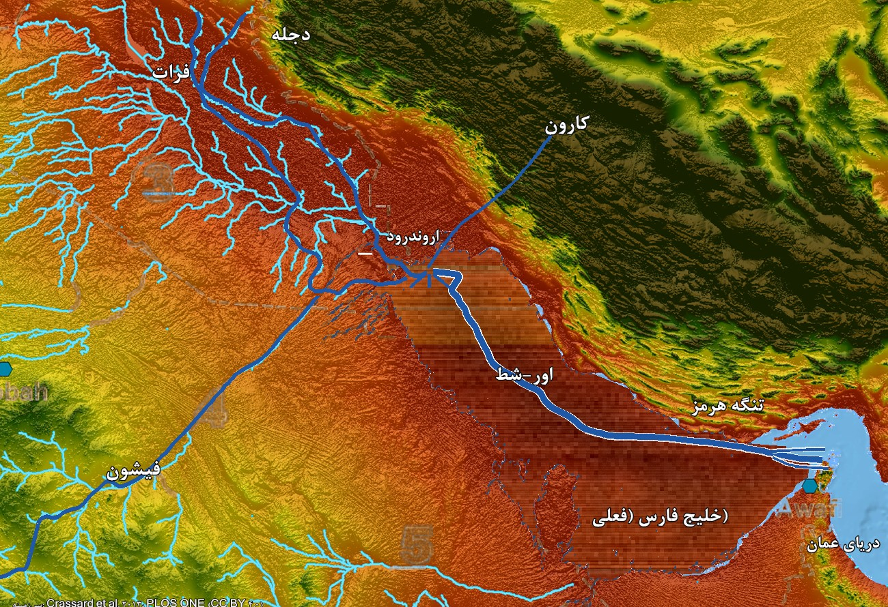

آیا باغ عدن واقعا در خلیج فارس است؟
جمعآوری، ترجمه و راستیآزمایی: سپهر محمدی / نگارش نخست: پانزدهم آبان ۱۴۰۵

چکیده
بیش از دو هزار سال، روایت باغ عدن در پیدایش ۲:۱۰-۱۴ عمدتاً به تفسیر نمادین سپرده شده بود و جغرافیای چهارگانهٔ آن بهعنوان نامهای واقعیِ منطقهای چسبیده به روایتی افسانهای تلقی میشد. اما رشتهای از پژوهشها — از باستانشناسیِ جوریس زارینز و جیمز سائر، تا سنجش از دورِ فاروق الباز و بازسازیهای اقلیمی و جغرافیاییِ جفری رز و کرول هیل — این خوانش را دگرگون کرده است: تورات در این بخش، توصیفی دقیق از چشماندازی واقعی و فرورفته در سرچشمهٔ خلیج فارس عرضه میکند، نه معبدی نایافتنی در کوه. بر پایهٔ این فرضیه، «نهرِ» عدن همان سامانهٔ آبریزِ حوضهٔ خلیج فارس است و شعبههای چهارگانهاش چهار رودِ هممصب: دجله (حدقل) و فرات از آناتولی، جیحون از زاگرس (رود کارون، در سرزمین کوشِ کاسی)، و فیشون — رودِ خشکیدهٔ عربستان (وادی الرمه تا وادی الباطن، «رود کویت») که رادار ماهوارهای در ۱۹۹۳ زیر شنهای حجاز کشف کرد و از کوههای حجاز، از دامنهٔ کهنترین معدن طلای شناختهشدهٔ شبهجزیره — مهدالذهب — سرچشمه میگرفت؛ همان سرزمینِ طلای «حویله». این چشمانداز میان ۱۴ تا ۶ هزار سال پیش با پیشرویِ دریای پسایخچالی زیر آب رفت: در اوجِ آخرین عصر یخبندان سطح دریا حدود ۱۲۰ متر پایینتر بود و بستر خلیج، درهای سرسبز و آبشیرین بود («فرضیهٔ واحهٔ خلیج»؛ جفری رز، ۲۰۱۰) که رودِ پیوستهٔ «اور-شط» از دل آن به هرمز میریخت. سه شاهد مستقل نیز زندهماندنِ خاطرهٔ این غرقشدگی را تأیید میکنند: اسطورهٔ دیلمون در حماسهٔ انکی و نینهورساگ، جایگاه اریدو بهمثابه نخستین شهر بر لبِ خلیجِ نوپدید، و پژوهش تجربی نان و رید (۲۰۱۶) دربارهٔ وفاداری سنت شفاهی بومیان استرالیا در نگهداشتِ جغرافیای سواحلِ غرقشده از بیش از هفت هزار سال پیش. این نوشتار ترجمه و مستندسازیِ همین استدلال است؛ و در پایان، هر ادعای پژوهشیِ آن را با منبعِ اصلی راستیآزمایی کردهایم: چه چیزهایی تأیید شد، و چه چیزهایی نیازمند تصحیح یا تردید است.
ساختار نوشتار چنین است: نخست بازخوانیِ متنِ پیدایش و واژهٔ «عدن/ادین»؛ سپس شناسایی شعبههای چهارگانه؛ آنگاه توپوگرافی اقتصادی حویله؛ پس دیرینهاقلیمشناسیِ «واحهٔ خلیج»؛ سپس سه شاهدِ تطبیقی؛ و در پایان نتیجه و راستیآزماییِ منابع با پیوندِ هر منبع.
۱. بازخوانی پیدایش ۲: از نماد تا توپوگرافی
روایتِ تورات چنین است:
«و نهری از عدن بیرون آمد تا باغ را سیراب کند، و از آنجا منقسم گشته، چهار شعبه شد. نامِ اول فیشون است که تمام زمینِ حویله را که در آنجا طلاست، احاطه میکند. و طلای آن زمین نیکوست و در آنجا مروارید و سنگِ جزع است. و نامِ نهرِ دوم جیحون که تمام زمینِ کوش را احاطه میکند. و نامِ نهرِ سوم حدقل که بهطرفِ شرقیِ آشور جاری است. و نهرِ چهارم فرات.» (پیدایش ۲:۱۰-۱۴ — ترجمهٔ فارسی قدیم)
به گزارش طرفداران این فرضیه، فرمولِ «نهرِ واحد که چهار شعبه میشود» سالها سوءفهم جغرافیایی برانگیخته است: ترجمهٔ فارسی قدیم نیز واژهٔ عبریِ «رؤوس» (راشیم) را به همین معنا، «شعبه» برگردانده است؛ مفسران «رؤوس» را سرچشمههای کوهستانی میپنداشتند و از این رو عدن را در ارمنستان و ارتفاعات آناتولی جستوجو میکردند، بیآنکه هرگز چهار رودِ مستقل بتواند از یک نقطه برخیزد. اما بر پایهٔ قرائتِ زارینز و پیروانش، در توصیفهای جغرافیاییِ خاور نزدیک باستان، «رؤوسِ» نهر نه سرچشمه که محلِ تجمع و پیوندِ شاخههاست — همانجا که شاخهها به پیکرهای آبگیر میپیوندند یا از آن جدا میشوند. با چنین قرائتی، متن یک نقشهٔ همگرایی است: چهار سامانهٔ رودی بزرگ به یک دلتای پستِ واحد میریزند.
واژهٔ «عدن» نیز در همین راستا خوانده میشود: عبارتِ سومری «ادین» به چمنزار و دشتِ بازِ میان مزارع بینالنهرین گفته میشد و از راه اکدیِ «ادینو» به عبری راه یافت. پس «عدن» در لایهٔ کهنِ واژه، نامِ یک چشمانداز است: دشتِ هموار. در جنوب عراق، سطح زمین در بیش از پانصد کیلومتر تنها حدود سی متر فرومیافتد؛ این همواریِ افراطی، همهٔ رودهای منطقه را کند، باتلاقی و به یک نقطهٔ فرودِ واحد در سرچشمهٔ خلیج فارس گرد میآورد.
باید صادقانه افزودن: همین قرائتِ «رؤوس = هممصب» حلقهٔ مناقشه است؛ متنِ پیدایش میگوید نهر «از عدن» بیرون آمد و از آنجا «منقسم گشته، چهار شعبه شد» — و ترجمهٔ فارسی قدیم نیز همین خوانشِ انشعابِ از سرچشمه را برگزیده است — پس جهتِ ظاهریِ متن با خوانشِ همگرایی معکوس است. هواداران فرضیه پاسخ میدهند که «رؤوسِ» متنِ عبری به پایانهها اشاره دارد و زاویهٔ نگاهِ راوی، از دریای پایین به بالاست. این نکته در بخش راستیآزمایی با تفصیل آمده است.
۲. شعبههای چهارگانه: دو لنگرگاه بیاختلاف و دو معما
| نهر در ترجمهٔ قدیم | شناسهٔ جغرافیایی امروزی | سرچشمه | نقطهٔ همگرایی | مانعِ شناسایی تاریخی |
|---|---|---|---|---|
| حدقل | رود دجله | ارتفاعات آناتولی (ترکیه) | اروندرود / حوضهٔ خلیج فارس | ندارد؛ آبراههٔ تاریخیِ مسلم |
| فرات | رود فرات | ارتفاعات آناتولی (ترکیه) | اروندرود / حوضهٔ خلیج فارس | ندارد؛ آبراههٔ تاریخیِ مسلم |
| جیحون | رود کارون | رشتهکوه زاگرس (غرب ایران) | اروندرود / حوضهٔ خلیج فارس | برگردانِ نادرستِ «کوش» به حبشه بهجای سرزمینِ کاسیها (کاشو) |
| فیشون | «رود کویت» مدفون (وادی الرمه / وادی الباطن) | کوههای حجاز (غرب عربستان) | سرچشمهٔ خلیج فارس (دلتای کویت) | خشکشدن کاملِ سامانهٔ رودیِ عربستان حدود ۵ هزار سال پیش |
۲-۱. لنگرگاههای بیاختلاف: دجله و فرات
دجله (حدقل) و فرات دو پایهٔ شمالی و شمالغربیِ این چهارگانهاند. هر دو از کوههای شرق ترکیه سرچشمه میگیرند، تقریباً موازی از میان عراق میگذرند و در جنوب آن کشور، نزدیک بصره، به یک آبراههٔ واحد — اروندرود — میپیوندند که به خلیج فارس میریزد. حضورِ صریحِ این دو رود، روایت را محکم در جغرافیای بینالنهرین لنگر میاندازد.
۲-۲. جیحون: گرهگشایی از اشتباهِ کاسی
پدرانِ کلیسا و مفسرانِ کلاسیک، «سرزمین کوش» را با حبشه (نوبیا) برابر گرفتند و ناگزیر جیحون را نیل پنداشتند؛ پیوندِ نیل با دجله و فرات تنها با تصورِ رودهای زیرزمینی یا اقیانوسپیمای ممکن بود و همین، مفسران را به خوانشهای نمادین رانده بود. اما در کتیبههای میخیِ بینالنهرین، «کاشو» نامِ کاسیهاست — قوم کوهنشینی که در زاگرس، خاورِ دجله در غرب ایرانِ امروزی، ساکن بودند. جوریس زارینز جیحون را با کارون — بزرگترین رود ایران از نظر دَبی — برابر دانست: رودی که از دل زاگرس بیرون میآید، از سرزمینِ کاسیهای باستان میگذرد و در خرمشهر به اروندرود میریزد؛ یعنی درست در سرچشمهٔ خلیج فارس، بر پایِ شاخهٔ شرقیِ همگرایی.
۲-۳. فیشون: کشفِ راداریِ «رود کویت»
نهرِ چهارم — فیشون — سختترین معمّا بود، چرا که امروز هیچ رود دائمی از شبهجزیرهٔ عربستان نمیگذرد و شکاکان، رودی را که از عربستان به خلیج بریزد ناممکن جغرافیایی میشمردند.
در ۱۹۹۳، دکتر فاروق الباز — زمینشناس مصری-آمریکایی و مدیرِ مرکز سنجش از دورِ دانشگاه بوستون، که از چهرههای برنامهٔ ماه آپولوی ناسا بود — با کاوشِ تصاویر ماهوارهای و راداری، زیر شنهای فوقخشکِ بیابان عربستان یک سامانهٔ رودیِ مدفونِ کهن به طول حدود ۸۵۰ کیلومتر ترسیم کرد. این کانالِ خشکشده — که در ادبیات زمینشناسی «رود کویت» نامیده میشود و درههای خشکِ امروزیِ وادی الرمه و وادی الباطن را در بر میگیرد — از کوههای حجاز در غرب عربستان برمیخاست، تمام شبهجزیره را در مسیری شمالشرقی قطع میکرد و در کویت، درست بر سرِ همگراییِ دجله و فرات و کارون به خلیج میریخت. جیمز سائر در ۱۹۹۶ همین کانال را کاندیدِ اصلیِ فیشون خواند و استدلال کرد که روایتِ آفرینش، خاطرهٔ تاریخیِ رودی است که دیگر نیست. تحلیلِ پهنای بستر و رسوباتِ سنگریزهای نشان میدهد این رود زمانی آبراههای همقیاس با دجله بوده که سنگریزههای درشت جابهجا میکرده و دلتای پهنی بر بیابان کویت نهاده است.
اگر این چهار شاخه را روی هم بگذاریم، تصویر یک چهارراهِ آب پدید میآید:
- شاخهٔ شمالی: دجله و فرات (از ترکیه، رو به جنوب از میان عراق).
- شاخهٔ شرقی: جیحون / کارون (از زاگرسِ ایران، رو به غرب).
- شاخهٔ غربی: فیشون / رود کویت (از حجاز، رو به شمالشرق تا کویت).
- نقطهٔ همگرایی: دلتای اروندرود / سرچشمهٔ خلیج فارس — دشتِ «ادین» و حوضهٔ فرورفتهٔ باغ.
۳. توپوگرافی اقتصادی حویله: طلا، صمغ و سنگ
توصیفِ توراتی از فیشون جزئیاتی بازرگانی دارد: «نامِ اول فیشون است که تمام زمینِ حویله را که در آنجا طلاست، احاطه میکند. و طلای آن زمین نیکوست و در آنجا مروارید و سنگِ جزع است» (پیدایش ۲:۱۱-۱۲ — ترجمهٔ فارسی قدیم). برخلاف توصیفهای اسطورهایِ کلاسیک از بهشت — که بینیازی از کار، نان و پوسیدن را برجسته میکنند — این بند به زبانِ فهرستِ کالای تاجرانهٔ باستان سخن میگوید.
۳-۱. مهدالذهب: معدن طلای کهن حجاز
سرچشمههای رودِ کویت از همان رشتهکوه غرب عربستان میریزند که کهنترین معدن طلای شناختهشدهٔ شبهجزیره — مهدالذهب («گهوارهٔ طلا») — در آن جای دارد؛ در حدود ۱۸۰ کیلومتری مدینه در استان حجاز، با نشانههای بهرهبرداری از حدود سه هزار سال پیش (بر پایهٔ منابع عربستانی، از روزگار سلیمان، حدود ۹۵۰ پیش از میلاد). مهندسِ معدنِ آمریکایی کارل توئیچل در ۱۹۳۲ آن را دوباره کشف کرد و در کاوشهای دههٔ ۱۹۳۰، بیش از یک میلیون تن پسماندِ کانهکاریِ باستانی، سنگآسیبهای دستی و سربارهٔ کوره در آن یافت. کانهٔ آن رگههای کوارتزیِ پرعیار است؛ و تعبیرِ توراتیِ «طلای آن زمین نیکوست» (عبری: توف) میتواند بازتابِ شهرتِ تجاریِ همین خلوص و عیار باشد — معادلِ باستانِ یک استانداردِ تجاریِ جاافتاده. (در بخشِ راستیآزمایی، در بارهٔ ادعای «کهنترین معدنِ فعالِ جهان» توضیح دادهایم.)
۳-۲. کالاهای تجاری: مروارید و سنگِ جزع
- مروارید (عبری: بِدولاخ): ترجمهٔ فارسی قدیم این واژه را «مروارید» برگردانده است؛ مراجعِ واژهشناختیِ متنِ عبری آن را صمغِ معطرِ برخاسته از درختان جنسِ کمیفرا میدانند که در شبهجزیرهٔ عربستان و شاخِ آفریقا روییدهاند؛ در خاور نزدیک باستان از ارزشمندترین بخور و داروها بود و در اسناد تجاریِ اکدی نیز بازمیگردد.
- سنگِ جزع (عبری: شُهم؛ اُونیکس): سنگِ نیمهگرانبهایِ حجاری که از شبکههای تجاری عربستان مبادله میشد.
- حویله: در شجرهها و یادداشتهای جغرافیاییِ تورات — پیدایش ۱۰:۲۹ («و اوفیر و حویله و یوباب را. این همه پسران یقطان بودند» — ترجمهٔ قدیم) و پیدایش ۲۵:۱۸ («از حویله تا شور، که مقابلِ مصر، به سمتِ آشور واقع است» — ترجمهٔ قدیم؛ جایگاهِ تبارِ اسماعیل) — پیوسته به همان پهنهٔ بیابانیِ شمال و مرکزِ شبهجزیرهٔ عربستان، میان سرزمینِ شام و بینالنهرین اشاره شده است.
۴. دیرینهاقلیمشناسی: «واحهٔ خلیج» و رود اور-شط
همگراییِ چهار رود در یک چشماندازِ مسکون، به چارچوبِ اقلیمی نیازمند است: عربستانی با آبِ سطحی، و خلیج فارسِی که خشکی بوده است.
گامهای زمانی حوضه چنین بازسازی شده است:
۱. ۲۰ هزار سال پیش (اوجِ آخرین عصر یخبندان): سطح دریاهای جهان حدود ۱۲۰ متر پایینتر از امروز بود. بستر خلیج فارس درهای خشک، پست و آبدار بود — «واحهٔ خلیج». سامانهٔ پیوستهٔ اور-شط همهٔ آبهای منطقه را در طول حوضه به اقیانوس هند، در تنگهٔ هرمز، میبرد. ۲. ۱۴ هزار سال پیش: بر پایهٔ بازسازیِ لامبک، آب دریا تنگهٔ هرمز را گشود و طغیان دریایی آغاز شد؛ و تا حدود ۶ هزار سال پیش حوضه بهکلی زیر آب رفت. ۳. ۱۱ تا ۵/۵ هزار سال پیش (دورانِ مرطوبِ هولوسن): جابهجاییِ شمالسویِ موسم، «عربستانِ سبز» را آغاز کرد: دریاچههای ماندگار، علفزارها، و جریانِ فعالِ رود کویت در سراسر شبهجزیره. ۴. ۶ هزار سال پیش: خلیج به اوجِ سطح خود رسید (بر پایهٔ پژوهشهای خلیج، حدود یک تا دو متر بالاتر از امروز)؛ دلتاهای ساحلیِ کهن مانند اریدو و اور در پهنهٔ ساحلِ نوپدید بنیاد شدند، در همان حال که با عقبنشینیِ موسم، رود کویت خشکید.
۴-۱. دوران مرطوب هولوسن («عربستان سبز»)
میان حدود ۱۱ تا ۵/۵ هزار سال پیش، سامانهٔ موسمیِ آفریقایی-آسیایی رو به شمال جابهجا شد و دورانِ مرطوبِ هولوسن را آغاز کرد. در این عصر، درونِ عربستان دریاچههای دائمی، دشتهای ساوانی و سامانههای رودیِ فعال داشت. پیمایشهای باستانشناسی در درونِ عربستان — از جمله پروژههای «عربستان سبز» — ابزارسنگیهای نوپارینهسنگی، اردوگاههای گاوداری و سکونتگاههای کنارِ دریاچههای ازمیانرفته را در همان مسیرِ آبراههای ماندگار مستند کردهاند.
۴-۲. فرضیهٔ «واحهٔ خلیج» و رود اور-شط
در اوجِ آخرین عصر یخبندان (~۲۰ هزار سال پیش)، سطح دریا حدود ۱۲۰ متر پایینتر از امروز بود. خلیج فارس حوضهای بسیار کمژرفاست — با میانگینِ ژرفای حدود ۳۵ تا ۵۰ متر و بیشینهٔ حدود ۹۰ متر نزدیک تنگهٔ هرمز — پس تمامِ هزارکیلومترِ کفِ حوضه خشکیِ آشکار بود.
در پژوهشِ شاخصِ ۲۰۱۰ در نشریهٔ Current Anthropology، باستانشناسِ جفری رز «فرضیهٔ واحهٔ خلیج» را صورتبندی کرد: در عصر یخبندان — وقتی پیرامونِ حوضه فوقخشک بود — گودالِ خلیجِ خشکیده، واحهای سرسبز و پناهگیر از آبِ شیرین بود که از پیوندِ چهار شاخه — دجله، فرات، کارون و رود کویت — سیراب میشد. این چهار شاخه در یک آبراههٔ اصلیِ واحد به هم میپیوستند — همان که زمینشناسان اور-شط میخوانند — که در طولِ حوضه رو به جنوبشرق جاری میشد و در هرمز به اقیانوس هند میریخت.
۴-۳. رویداد فرورفتگی
با ذوبِ یختاقهای قارهای میان ۱۴ تا ۶ هزار سال پیش، بالا آمدنِ دریا از تنگهٔ هرمز سرریز کرد. بهسببِ همواریِ بستر خلیج، اندک بالارفتنِ عمودیِ سطح دریا، جابهجاییِ افقیِ درشتِ ساحل را در پی داشت؛ ساحلی که در یک عمرِ انسانی کیلومترها به درون خشکی پیش میرفت. تا حدود ۶ هزار سال پیش (~۴۰۰۰ پیش از میلاد) اقیانوس حوضه را بهکلی فراگرفته، ساحلی بلندتر از امروز پدید آورده و دلتای کهنِ همگراییِ چهار رود را زیر آب برده بود.
۵. اسطورهشناسی تطبیقی: سه شاهد مستقل
این فرضیه که سکونتگاههای نخستینِ واحهٔ خلیج با طغیانِ دریایی فرورفتهاند، سه شاهدِ فرهنگی و باستانشناختیِ مستقل در پشتِ خود دارد.
۵-۱. شاهد نخست: دیلمونِ سومری (حماسهٔ انکی و نینهورساگ)
از لوحهای میخیِ هزارهٔ سوم پیش از میلاد، اسطورهٔ سومریِ «انکی و نینهورساگ» بهشتی نخستین به نامِ دیلمون را وصف میکند:
- ویژگیها: دیلمون سرزمینی پاک و آرام است: بیمرگ، بیدرندگی و بیدرد.
- هیدرولوژی: دیلمون در آغاز از آبِ شیرینِ سطحی تهی است؛ خدای آب، انکی، برآمدنِ آبِ شیرین را از ژرفای زمین (ابزو) فرمان میدهد و دیلمون باغی فراوان میشود. از نظر زمینشناسی، این آینهٔ چشمههای آرتزینِ پیرامون بحرین است — همان آبخوانهای زیرزمینی که از بستر دریا فوران میکنند و از دیرباز گزارش شدهاند.
- همسنجی با پیدایش: در متن، گیاهی ممنوع خورده میشود، نفرینی الهی نازل میشود، و هشت ایزدِ درمان از آن برمیخیزند — یکی از آنان نینتی، به معنای هم «بانوی دنده» و هم «بانوی زندهانگیز»؛ ایهامی زبانی که در همان جنسِ خویشاوندیِ نامِ حوا («زندگی») و دنده در روایتِ تورات بازمیگردد.
۵-۲. شاهد دوم: اریدو، نخستین شهر
فهرست پادشاهان سومری بهیکصدا میگوید پادشاهی از آسمان به اریدو فرود آمد و اریدو را کهنترین شهرِ سنتِ بینالنهرین میشمارد. کاوشهای باستانشناسیِ دههٔ ۱۹۳۰ و ۱۹۴۰ (بهویژه صفر و لوید) تأیید کرد که اریدو (تپهٔ امروزیِ ابو شهرین) کهنترین سکونتگاهِ شهریِ جنوب بینالنهرین است، با آغازِ سکونت در حدود ۵۴۰۰ پیش از میلاد.
در لایههای پایینی، دنبالهای از حدود هجده معبدِ رویهمساختهٔ انکی آشکار شد، در پیرامونِ تلهای انبوهِ استخوانِ ماهی که به خدای ژرفای آبِ شیرین پیشکش میشد. به هنگامِ بنیادِ اریدو، شهر بر لبهٔ باتلاقها و تالابِ لبِ خلیجِ کهن نشسته بود — درست در نقطهٔ دیدارِ سامانهٔ رودی با دریای رو به بالا.
۵-۳. شاهد سوم: آزمونِ تجربیِ وفاداریِ سنت شفاهی
اشکالِ رایج بر هستهٔ تاریخیِ پیدایش این است: آیا خاطرهٔ جغرافیایی میتواند بیسندِ نوشتاری هزاران سال دوام آورد؟ پژوهشی تجربی به این پرسش پاسخ داده است. در مطالعهٔ پاتریک نان و نیکلاس رید، ۲۱ روایتِ شفاهیِ بومیانِ استرالیا از مناطقِ ساحلی تحلیل شد؛ هر روایت جزئیاتِ چشمانداز، جزیرههای کنارِ ساحل و جایگاههای شکار را وصف میکرد که امروز زیر آباند. تطبیقِ این روایتها با دادههای ژرفسنجی نشان داد که این داستانها جغرافیای سواحلِ غرقشده از بیش از ۷ هزار سال پیش (در همان پنجرهٔ پسایخچالیِ ۱۴ تا ۶ هزار سال) را با دقت نگه داشتهاند — یعنی انتقالِ شفاهی میتواند سندِ جغرافیاییِ درست را در بیش از ۴۰۰ نسل برساند.
۶. چرا این جغرافیا از حافظهٔ پژوهش گم شد؟
اگر مختصاتِ جغرافیاییِ عدن بهراستی به حوضهٔ خلیج فارس اشاره میکند، چرا این دانش از دستِ پژوهش رفت؟ بازگشتِ روایت از توصیفِ جغرافیایی به اسطوره، در سه فاز تاریخی رخ داد:
۱. خشکشدنِ فیشون (~۳۰۰۰ پیش از میلاد): تا زمانِ مفسرانِ هلنیستی و مسیحیِ نخستین، رود کویت هزاران سال بود که خشکیده بود. بیخبر از آبراههای کهنِ عربستان، خوانندگان فیشون را افسانهای ساختند و به همین، شک بر کلِ بند افکندند. ۲. وارونگیِ جهتِ رود: نقشهنگارانِ میانه، «رؤوسِ» رودها را سرچشمههای کوهی پنداشتند و عدن را به شمال، به کوههای ارمنستان راندند. چون رودهای آناتولی از بلندی میخیزند و رو به جهتهای گوناگون میروند، جغرافیا دیگر نمیساخت و خوانشهای تمثیلی تشویق شد. ۳. آشورشناسیِ سدهٔ نوزدهم: کشفِ حماسهٔ گیلگمش و لوحهای طوفانِ سومری، پیدایش را در چشمِ پژوهشگران به اسطورهای مشتق از خاور نزدیک بدل کرد و چشماندازِ فیزیکیِ زیرِ متن نادیده ماند.
پیدایش ۳:۲۴ میگوید پس از بیرونکردنِ آدم، «به طرفِ شرقیِ باغِ عدن، کروبیان را مسکن داد و شمشیرِ آتشباری را که به هر سو گردش میکرد، تا طریقِ درختِ حیات را محافظت کند» (ترجمهٔ فارسی قدیم). به معنای جغرافیاییِ امروزی، حوضهٔ فرورفته در سرچشمهٔ خلیج فارس به دلایلِ صنعتی و امنیتی پهنهای بهشدت محدود است؛ پوشیده از رسوبِ کلفتِ رودی و گذرگاهِ ترافیکِ دریاییِ پیچیده، بسترِ فرورفتهٔ آن یکی از کمکاوشترین سدهای دریایی جهان مانده است.
یادداشت قرآنی: قرآن داستانِ آدم و هبوط را روایت میکند، اما مکانِ باغِ نخستین را هرگز نام نمیبرد؛ و «عدنِ» زبانِ قرآن صفتِ جناتِ آخرت است («جناتِ عدن که درمیآیند» — رعد ۱۳:۲۳؛ نیز ص ۳۸:۵۰)، نه نامِ جغرافیاییِ باغِ پیدایش. پس این فرضیه — هر که به آن بگرود — از سنخِ بازخوانیِ جغرافیای کتاب مقدس است، نه دادهای قرآنی؛ و خوانندهٔ قرآنی میتواند آن را بهعنوان پژوهشی دربارهٔ حافظهٔ جغرافیاییِ اهل کتاب دنبال کند، بیآنکه باور به آن از ارکانِ قرآن باشد.
نتیجه
۱. همگراییِ سنجش از دور، دیرینهاقلیمشناسی، آشورشناسی و ژرفسنجی، پروندهای جدی برای ریشهداریِ تاریخیِ پیدایش ۲ ساخته است: واقعگراییِ توپوگرافیک (باغ بر نقطهٔ همگراییِ چهار رود)، راستیآزماییِ هیدرولوژیک (دجله، فرات، کارون و رودِ رادار-یافتهٔ کویت در سرچشمهٔ خلیج فارس)، دقتِ اقتصادی (فیشون از حجاز برمیخاست؛ از دامنهٔ مهدالذهب، سرزمینِ طلای نیکوی حویله)، و چارچوبِ زمینشناختی (واحهٔ خلیجِ فرورفته میان ۱۴ تا ۶ هزار سال پیش).
۲. بر پایهٔ منابعِ مستندِ بخشِ راستیآزمایی، هستهٔ سختِ این استدلال — کشفِ رودِ کویت به دستِ الباز در ۱۹۹۳، شناسهگذاریِ زارینز برای جیحون/کارون و کوشِ کاسی، فرضیهٔ واحهٔ خلیجِ رز (۲۰۱۰)، گاهبندیِ فرورفتگیِ لامبک (۱۹۹۶) و شواهدِ دیلمون و اریدو — تأیید پذیرفت؛ اما دو ادعا به تصحیح نیاز داشت (ادعای «کهنترین معدنِ فعالِ جهان» و تاریخِ انتشارِ نان و رید) و یک حلقهٔ استدلال — قرائتِ «رؤوس = هممصبها» — همچنان موضعِ تفسیریِ مدافعان است، نه اجماعِ پژوهش.
۳. آنچه این روایت حفظ کرده — بر فرض درستیِ فرضیه — خاطرهای چندنسلی از بهشتی پسایخچالیِ فرورفته است: دلتایی آبشیرین و سرسبز که امروز زیر آبِ خلیج فارس خفتهست؛ روایتی که قرآن نه تأییدش میکند و نه نفی، و پژوهشِ این حافظهٔ جغرافیایی، میدانِ مشترکِ شایستهای برای گفتمانِ بینامتنیِ تورات، اسطورههای بینالنهرین و باستانشناسی است.
راستیآزمایی منابع
این نوشتار، ترجمه و بازنویسیِ سندی است که بر پایهٔ مستندِ ویدیوییِ کانال «Sumer Vault» ساخته شده بود (پیوند در پایانِ منابع). همهٔ ادعاهای پژوهشیِ آن جداگانه بررسی شد. نتیجه به تفکیک:
تأیید شد (با منبع):
- کشفِ ۱۹۹۳ و طول ~۸۵۰ کیلومتر: خبرِ کشفِ رودِ کهن میان حجاز و کویت به دست فاروق الباز، مدیرِ مرکز سنجش از دورِ دانشگاه بوستون، در مارس ۱۹۹۳ منتشر شد؛ خبرگزاری UPI طولِ بستر را ۵۱۰ مایل و نیوساینتیست ۸۵۰ کیلومتر گزارش کرد. مقالهٔ علمیِ الباز و السراوی با عنوانِ «کویت بهمثابه مخروطافکنه؛ رودِ کهن» (۱۹۹۶) نیز در بایگانی دانشگاه بوستون در دسترس است.
- فیشون = وادی الباطن (سائر): مقالهٔ جیمز سائر، «رودی که خشکید: روایتِ آفرینش، نگهدارندهٔ خاطرهٔ تاریخی»، Biblical Archaeology Review ۲۲/۴ (۱۹۹۶)؛ ارجاعِ آن در مدخلِ وادی الباطن و خلاصههای دستدوم ثبت است.
- جیحون = کارون و کوش = سرزمین کاسیها (زارینز): مدخلِ جیحون در ویکیپدیا صریحاً این شناسهگذاری را به جوریس زارینز نسبت میدهد؛ کارون نیز در دانشنامهٔ ایرانیکا «بزرگترین رود ایران از نظر دَبی» و از زاگرس به اروندرود توصیف شده است.
- فرضیهٔ واحهٔ خلیج (رز، ۲۰۱۰): Jeffrey I. Rose, “New Light on Human Prehistory in the Arabo-Persian Gulf Oasis”, Current Anthropology ۵۱/۶ (۲۰۱۰)، DOI 10.1086/657397 — عنوان، نشریه، سال و شماره بررسی و تأیید شد.
- رود اور-شط: در ادبیات پژوهشیِ عربستان و خلیج (از جمله The Evolution of Human Populations in Arabia) بازسازیِ «اور-شط» بهمثابه رودِ پیوستهٔ دجله-فرات-کارون-وادیالباطن در حوضهٔ خشکیدهٔ خلیج ثبت است.
- گاهبندیِ فرورفتگی: مقالهٔ کورت لامبک، «بازسازی خطوط ساحل خلیج فارس از اوج آخرین عصر یخبندان»، Earth and Planetary Science Letters ۱۴۲ (۱۹۹۶): گشودهشدنِ هرمز تا ۱۴ هزار سال پیش و آغازِ طغیانِ دریایی به حوضهٔ میانی در ~۱۲/۵ هزار سال؛ و پژوهشهای بعدیِ خلیج، اوجِ سطحِ میانههولوسن را بیش از یک متر بالاتر از امروز (حدود ۷۱۰۰ تا ۶۸۹۰ سال پیش) میخوانند.
- ژرفای خلیج: بیشینهٔ ژرفا ~۹۰ متر (ویکیپدیا و بریتانیکا)؛ میانگینِ گزارششده در منابع ۳۵ تا ۵۰ متر متغیر است.
- دورانِ مرطوبِ هولوسن: بازهٔ ~۱۱ تا ۵/۵ هزار سال پیش با موسمِ شمالرو در عربستان (گزارش GFZ)؛ و پروژههای عربستان سبز (گروکات و همکاران، ۲۰۲۰: دریاچهها و بناهای عصرِ مرطوب، حدود ۸۰۰۰ تا ۴۰۰۰ پیش از میلاد).
- دیلمون، انکی و نینهورساگ، و ایهامِ نینتی: متنِ حماسه در سومری (ETCSL) و خلاصههای پژوهشی؛ دیلمونِ بیمرگ، آبرسانیِ انکی از ابزو، و نینتی «بانوی دنده/زندهانگیز» (ایهامِ ti) تأیید میشود؛ چشمههای زیردریاییِ آبِ شیرینِ بحرین نیز در مدخلِ دیلمون بازتاب دارد.
- اریدو: فهرست پادشاهان سومری با «پادشاهی از آسمان، در اریدو»؛ کهنترین شهرِ جنوبِ بینالنهرین در تپهٔ ابو شهرین با آغاز ~۵۴۰۰ پیش از میلاد؛ و دنبالهٔ لایههای معبدِ انکی (سنجشِ معبد تا لایهٔ XVII بر خاکِ بکر؛ شمارِ مشهورِ «هجده لایه» در منابع عام).
- مهدالذهب: معدنِ طلای حجاز در ~۱۸۰ کیلومتری مدینه؛ بهرهبرداریِ کهن در حدود ۹۵۰ پیش از میلاد (روزگار سلیمان) و پس از آن در دورهٔ عباسی (۷۵۰ تا ۱۱۵۰ میلادی)؛ بازکشفِ ۱۹۳۲ به دست کارل توئیچل با یافتنِ پسماندهای کانهکاریِ باستانی به حجم میلیونها تن؛ توصیفِ USGS از آن بهمثابه بزرگترین معدنِ طلایِ باستانیِ سپرِ پرکامبرینِ عربستان.
- مروارید (بِدولاخ) و سنگِ جزع (شُهم): ترجمهٔ فارسی قدیم بِدولاخ را «مروارید» و شُهم را «سنگ جزع» برگردانده است؛ مدخلهای مرجعِ واژهٔ عبریِ بِدولاخ آن را صمغِ معطرِ درختان کمیفرای عربستان/آفریقا میخوانند و به پیدایش ۲:۱۲ و اعداد ۱۱:۷ ارجاع میدهند.
- حویله در تورات: پیدایش ۱۰:۲۹ (اوفیر و یوباب در کنار حویله، فرزندانِ یقطان) و پیدایش ۲۵:۱۸ («و ایشان از حویله تا شور، که مقابل مصر، به سمت آشور واقع است، ساکن بودند» — ترجمهٔ قدیم) — متنِ ساده و بیاختلاف.
- وفاداریِ سنت شفاهی (نان و رید): Patrick Nunn & Nicholas Reid, “Aboriginal Memories of Inundation of the Australian Coast Dating from More than 7000 Years Ago”, Australian Geographer ۴۷/۱ (۲۰۱۶): ۱۱-۲۹ — تحلیلِ ۲۱ روایتِ ساحلی که با ژرفسنجی تأیید شد.
- واژهٔ ادین: «ادینِ» سومری به معنای دشت/چمنزار، برگردانشده به اکدیِ «ادینو» و منشأِ محتملِ «عدنِ» عبری — مدخلهای دانشنامهایِ واژه و باغِ عدن.
- مستندِ مبدأ: ویدیوی «The Garden Of Eden Was Real — And Four Rivers On A 2,600-Year-Old Map Still Point To It» در کانال Sumer Vault — موجود و عیناً همان عنوانِ یادشده در سند.
نیازمند تصحیح یا تردید:
- «کهنترین معدنِ طلایِ فعالِ جهان»: اثباتناپذیر است. منابعِ عربستانی مهدالذهب را «کهنترین معدنِ [شناختهشدهٔ] پادشاهی» و USGS آن را «بزرگترین معدنِ باستانیِ سپرِ عربستان و تنها معدنِ آن با بهرهبرداریِ اخیر» میخوانند. در متنِ فارسی به «کهنترین معدنِ طلایِ شناختهشدهٔ شبهجزیره» تعدیل شد؛ «بیش از سه هزار سال» نیز به «حدود سه هزار سال» (۹۵۰ پیش از میلاد) تعدیل شد.
- تاریخِ پژوهشِ نان و رید: سندِ مبدأ آن را «مطالعهٔ ۲۰۱۵» میخواند؛ انتشارِ برخط در سپتامبر ۲۰۱۵ بود، اما شمارهٔ مجله ۲۰۱۶ است. بازهٔ «۷ تا ۱۳ هزار سال» در سندِ مبدأ، پنجرهٔ کلیِ پیشرویِ دریاست؛ عنوانِ خودِ مقاله حدِ «بیش از ۷ هزار سال» را ادعا میکند.
- کوشِ کاسی: برابریِ «کوشِ» پیدایش ۲:۱۳ با «کاشو» فرضیهٔ زارینز است؛ این برابری دربارهٔ «کوشِ» شجرهنامهٔ نمرود (پیدایش ۱۰:۸-۱۲) در ادبیات پژوهشی جایگاهی تثبیتتر دارد. در متن بهصورتِ منسوب به زارینز آمد.
- قرائتِ «رؤوس = هممصبها»: موضعِ تفسیریِ هوادارانِ فرضیهٔ خلیجی (زارینز، سائر، هیل) است، نه اجماع؛ منتقدان جهتِ متن (شقهشدن از عدن) را در تقابل با آن میخوانند. در متنِ فارسی هر دو سو آمد؛ کرول هیل (۲۰۰۰) صورتِ منسجمِ خوانشِ همگراییِ چهار رود در سرِ خلیج است.
- میانگینِ ژرفا: رقمِ «۳۵ متر» در برخی منابع است؛ دیگر منابع ~۵۰ متر گزارش میکنند. بازه نوشته شد. رقمِ «اوجِ سطحِ یک تا دو متر بالاتر» نیز بر پایهٔ پژوهشهای خلیج، حدِ پایینِ «بیش از یک متر» است.
- «هجده لایهٔ معبد»: شمارِ رایج در منابع عام است؛ گزارشِ کاوشِ «تسلخِ معبد» لایهها را تا XVII بر خاکِ بکر میشمارد؛ در متن با «حدود» آمد.
- نقلقولِ انگلیسیِ سندِ مبدأ از پیدایش ۲:۱۰-۱۴ ترجمهٔ آزادی شبیه ESV است، نه نقلِ موبهمو؛ در این ترجمهٔ فارسی، واژگانِ کتابمقدسی عیناً بر پایهٔ ترجمهٔ فارسی قدیم آمده است (فیشون، جیحون، حدقل، حویله، مروارید، سنگ جزع، «چهار شعبه»، کروبیان). نکتهٔ مهم: قدیم «رؤوسِ» عبری را «شعبه» برگردانده — یعنی خوانشِ سرچشمهای — حال آنکه استدلالِ فرضیهٔ خلیجی بر همین واژهٔ عبری تکیه میکند و آن را به معنای پایانهها میخواند؛ این اختلاف در متنِ مقاله بازتاب یافته است.
- نسبتِ «مدیرِ تمرینهای ماهِ آپولو»: نقشِ دقیقِ الباز در ناسا «سرپرستِ برنامهریزیِ علومِ ماهیِ برنامهٔ آپولو» بود؛ در متن به «از چهرههای برنامهٔ ماه آپولوی ناسا» تعدیل شد.
مقالات مرتبط
- رفتار قرآن با کتب گذشته — چارچوبِ قرآنیِ برخورد با متونِ پیشین؛ زمینهٔ مناسبی برای سنجشِ این فرضیه
- معرفت بینامتنی — روشِ خواندنِ لایههای مشترکِ متون؛ از خاطرهٔ جغرافیایی تا روایت
- خالقیت بعل در اساطیر و نفیِ پرستش آن در قرآن — سنجشِ تطبیقیِ اسطورههای خاور نزدیک با زبانِ قرآن
- داستان بت شبع در قرآن و تورات — نمونهٔ دیگرِ تناظرِ رواییِ قرآن و تورات با راستیآزماییِ منابع
منابع
کتاب مقدس
- پیدایش ۲:۱۰-۱۴؛ ۳:۲۴؛ ۱۰:۲۹؛ ۲۵:۱۸ — برگردانِ فارسی بر پایهٔ ترجمهٔ فارسی قدیم (نسخهٔ pesOPV در کتابخانهٔ .bible-sources پروژه)؛ متنِ عبری در Mechon-Mamre, پیدایش ۲ و برگردانِ انگلیسیِ ESV, Genesis 2:10-14 (BibleGateway)
پژوهشها و مقالات علمی
- Carol A. Hill, “The Garden of Eden: A Modern Look” — خوانشِ همگراییِ چهار رود در سرِ خلیج فارس؛ Perspectives on Science and Christian Faith 52 (2000)
- James A. Sauer, “The River Runs Dry: Creation Story Preserves Historical Memory”, Biblical Archaeology Review 22/4 (1996): 52-57, 64 — ارجاع در Wadi al-Batin (Wikipedia) و خلاصهٔ مقاله
- Farouk El-Baz & M. Al-Sarawi, “Kuwait as an Alluvial Fan, A Paleo-River” (1996) — Boston University Scholar؛ گزارشِ خبریِ کشف: UPI, 25 March 1993 و New Scientist, 3 April 1993
- R. Crassard و همکاران، “Middle Palaeolithic and Neolithic Occupations around Mundafan Palaeolake, Saudi Arabia: Implications for Climate Change and Human Dispersals”, PLOS ONE 8/7 (2013): e69665 — DOI: 10.1371/journal.pone.0069665 (CC BY 4.0)؛ نقشهٔ پایهٔ تصویرِ بالای مقاله: «شکل ۱ — شبکههای دیرینهرودِ عربستان»
- Jeffrey I. Rose, “New Light on Human Prehistory in the Arabo-Persian Gulf Oasis”, Current Anthropology 51/6 (2010) — ناشر (UCHICAGO) و JSTOR
- Kurt Lambeck, “Shoreline reconstructions for the Persian Gulf since the last glacial maximum”, Earth and Planetary Science Letters 142 (1996): 43-57 — NASA ADS
- Patrick Nunn & Nicholas Reid, “Aboriginal Memories of Inundation of the Australian Coast Dating from More than 7000 Years Ago”, Australian Geographer 47/1 (2016): 11-29 — DOI: 10.1080/00049182.2015.1077539
- Huw Groucutt و همکاران، “Monumental landscapes of the Holocene humid period in Northern Arabia” (2020) — PMC؛ بازهٔ ~۱۱ تا ۵/۵ هزار سال برای دوران مرطوب: گزارش GFZ
- تغییرات سطح آب و اوجِ میانههولوسنِ خلیج: Late Quaternary sea-level changes of the Persian Gulf
- رود اور-شط در ادبیات پژوهشی: The Evolution of Human Populations in Arabia
منابع دانشنامهای و مرجع
- Pishon (Wikipedia) و Gihon (Wikipedia) — شناسهگذاریِ زارینز (جیحون = کارون؛ کوش = کاسیها)
- Karun (Wikipedia) و Karun River (Encyclopaedia Iranica)
- Persian Gulf (Wikipedia) و Persian Gulf (Britannica)
- Edin, Sumerian term (Wikipedia) و Garden of Eden (Encyclopedia.com)
- Enki and Ninhursag / Ninhursag (World History Encyclopedia) و متنِ سومریِ حماسه (ETCSL)
- Dilmun (Wikipedia) و Eridu (Wikipedia)
- Bdellium (Wikipedia)
- Mahd Al-Dhahab (Wikipedia)؛ USGS: Mineral exploration, Mahd adh Dhahab District؛ Saudipedia: کهنترین معدن پادشاهی؛ Saudi Aramco World (1981): دورههای بهرهبرداری